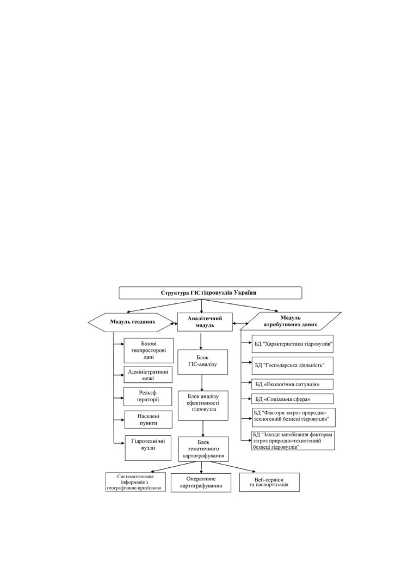
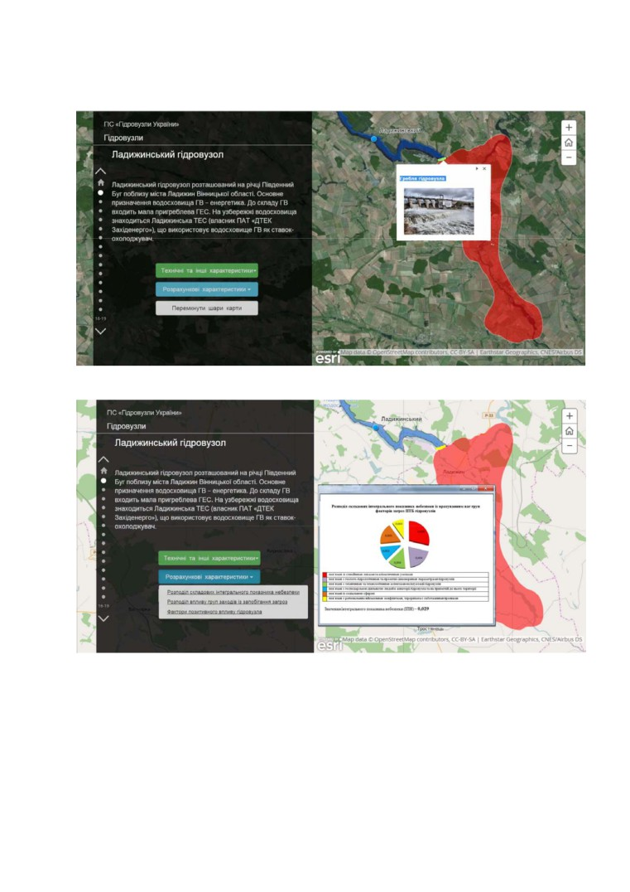
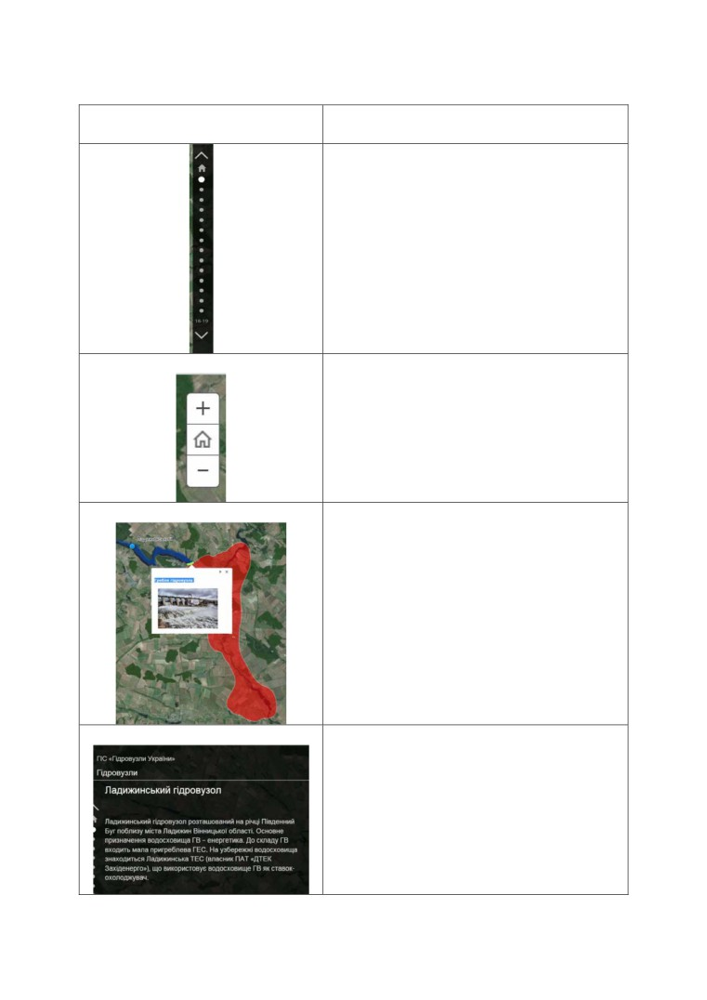
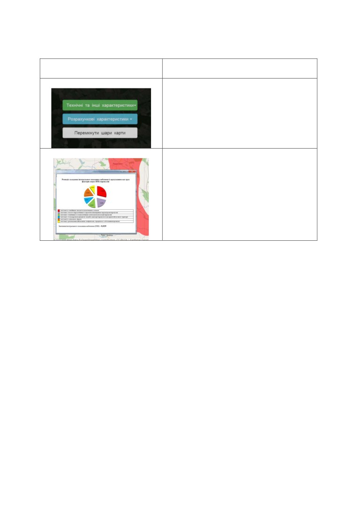

Д.Е. Бенатов, В.В. Путренко, Д.В. Стефанишин, Г.В. Рощупкін, 2016
ГЕОІНФОРМАЦІЙНА СИСТЕМА «ГІДРОВУЗЛИ УКРАЇНИ»
НАСТАНОВА КОРИСТУВАЧА
1. Призначення програми
Систематизація, обробка, аналізу та візуальне відображення даних, що
стосуються експлуатації гідровузлів
(гідротехнічні та енергетичні
споруди, акваторія водосховища, берегові споруди, прилегла територія
тощо) у поєднанні з геопросторовими параметрами. Програмний продукт
може використовуватись для оперативного прийнятті управлінських
рішень у сфері експлуатації гідротехнічних споруд та прилеглої до них
території в контексті забезпечення сталого розвитку складних природно-
техногенних комплексів, що сформувалися або формуються на базі
гідровузлів.
2. Структура ГІС «Гідровузли України»
1

Д.Е. Бенатов, В.В. Путренко, Д.В. Стефанишин, Г.В. Рощупкін, 2016
3. Інтерфейс користувача
Рис. 1 Екрани інтерфейсу програми
2

Д.Е. Бенатов, В.В. Путренко, Д.В. Стефанишин, Г.В. Рощупкін, 2016
Функціональний елемент
Призначення
інтерфейсу
Смуга прокрутки для вибору об’єкта
Кнопки
збільшення
масштабу
відображення карти та кнопка переходу
на стартову сторінку програми
Зона імовірного затоплення прилеглої
до гідровузла території
(виділена
червоним).
Позначка місця розташування греблі
гідровузла та спливаючий екран з
фотографією греблі.
Загальна інформація про гідровузол.
3

Д.Е. Бенатов, В.В. Путренко, Д.В. Стефанишин, Г.В. Рощупкін, 2016
Функціональний елемент
Призначення
інтерфейсу
Кнопки меню інформаційних блоків та
перемикання шарів карти.
Спливаючий екран з інформаційним
блоком.
4. Робота з програмою
За допомогою елементів інтерфейсу обирають об’єкт ГІС та відкривають
відповідні спливаючі екрани з інформаційними блоками.
5. Основні джерела, використані для підготовки ГІС «Гідровузли
України»:
1. Водний фонд України: штучні водойми — водосховища і ставки:
довідник /
[В. В. Гребінь, В. К. Хільчевський, В. А. Сташук, О. В.
Чунарьов, О. Є. Ярошевич] / за ред. В. К. Хільчевського, В. В. Гребеня. —
К. : «Інтер-Прес ЛТД», 2014. — 164 с.
2. Справочник по водохранилищам Украинской ССР, Министерство
мелиорации и водного хозяйства УССР. — К., 1967.
3. Паламарчук, М. М. Водний фонд України. Довідковий посібник [Текст]
/ М. М. Паламарчук, Н. Б. Закорчевна. - К. : «Ніка-Центр», 2001. - 388 с.
4. Водне господарство України / за ред. А. В. Яцика, В. К. Хільчевського.
— К. : «Генеза», 2000. — 437 с.
5. Лист Міністерства енергетики та вугільної промисловості України №
32-01/4-794 від 29.03.2013.
6. Лист Державного агентства водних ресурсів України № 2618/9/11-13 від
29.05.2013.
4
Д.Е. Бенатов, В.В. Путренко, Д.В. Стефанишин, Г.В. Рощупкін, 2016
7. Комп’ютерна база даних
«Водосховища СРСР» Всеросійського
науково-дослідного інституту гідротехніки ім. Б. Є. Вєдєнєєва (м. Санкт-
Петербург, Росія).
8. Водогосподарський паспорт Іскрівського водосховища / Український
південний проектно-вишукувальний інститут «Ук рпівдіпроводгосп». —
Одеса, 1982.
9.
Водогосподарський паспорт Карачуновського водосховища/
Український
державний
проектно-вишукувальний
інститут
«Укрпівдіпроводгосп». — К., 1982.
10.
Водогосподарський паспорт Касперівського водосховища/
Український проектно-вишукувальний інститут «Львівдіпроводгосп». —
Львів, 1981.
11.
Водогосподарський
паспорт
Курахівського
водосховища/
Державний проектно-вишукувальний інститут «Запоріжжядіпроводгосп».
— Запоріжжя, 1982.
12.
Водогосподарський паспорт Ладижинського водосховища/
Український
державний
проектно-вишукувальний
інститут
«Укрпівдіпроводгосп». — К., 1980.
Дані щодо імовірнісних наслідків прориву гребель гідровузлів та
карти зон затоплення надані у 2003 р. Державною службою України з
надзвичайних ситуацій.
Розрахункові дані наведені станом на 2013 р.
6. Розробники:
Бенатов Даніель Емілович
Старший викладач кафедри екології та технології рослинних полімерів
Національного
технічного
університету
України
«Київський
політехнічний інститут» ім. Сікорського
Путренко Віктор Валентинович
Кандидат географічних наук, старший науковий співробітник Навчально-
наукового комплексу «Інститут прикладного системного аналізу»
Стефанишин Дмитро Володимирович
Доктор технічних наук, професор, провідний науковий співробітник
Інституту телекомунікацій та глобального інформаційного простору НАН
України
5
Д.Е. Бенатов, В.В. Путренко, Д.В. Стефанишин, Г.В. Рощупкін, 2016
Розщупкін Георгій Вікторович
Студент Національного технічного університету України
«Київський
політехнічний інститут» ім. Сікорського
7. Контакти розробників:
т. +380503828157,
е-mail: daniel@benatov.kiev.ua
Увага! Права на ГІС «Гідровузли України» охороняються відповідно
Закону України «Про авторське право та суміжні права» (свідоцтво
про реєстрацію № 64745 від 01.04.2016) та відповідних міжнародних
договорів учасниками яких є Україна. Забороняється будь-яке
комерційне використання інформації, відтворення текстів, зображень
чи їх фрагментів без письмового дозволу авторів. При використанні
ГІС «Гідровузли України» на наукові чи освітні потреби посилання на
авторів є обов’язковим.
6